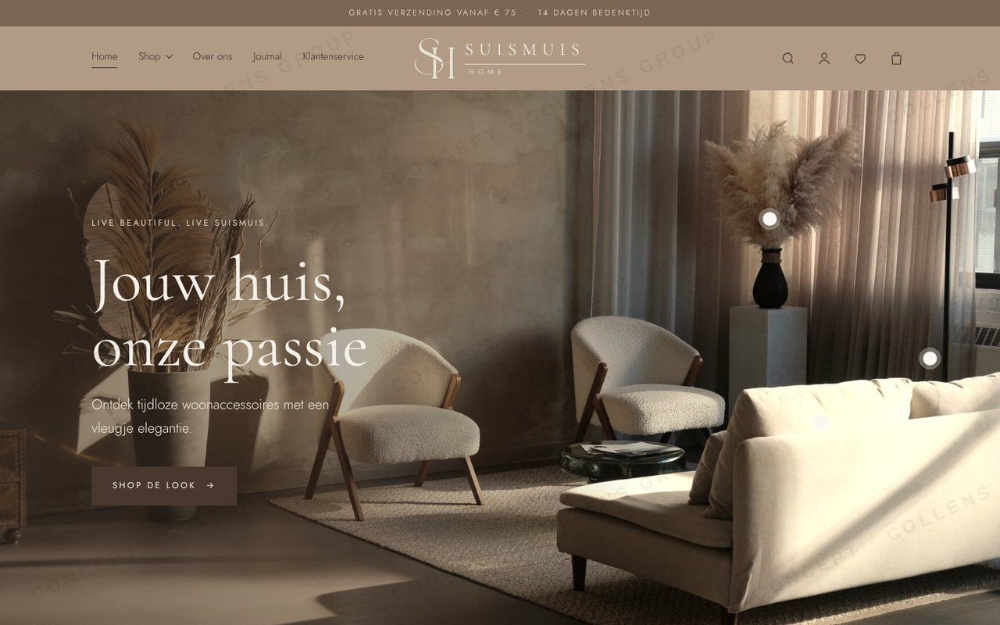
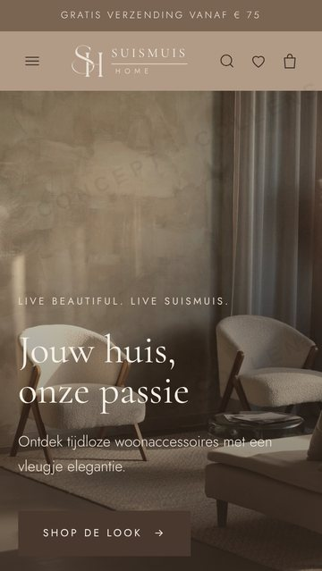

Website laten maken voor je schoonheidssalon of nagelstudio
Een rustige, snelle website voor je schoonheidssalon, nagelstudio of lash- en browstudio, waarop klanten meteen zien welke behandelingen je doet, wat ze kosten en wanneer ze terechtkunnen. Vanaf €495 (geen btw erbij), met een vaste prijs vooraf en een gratis concept binnen 48 uur.


Wat moet er op de website van een schoonheidssalon?
Een klant die een salon zoekt, wil drie dingen weten: doe je de behandeling die ik zoek, wat kost die en hoe lang duurt het, en wanneer kan ik komen? Een goede salonwebsite beantwoordt dat op de telefoon binnen een paar seconden, in een uitstraling die past bij de rust en verzorging van je salon.
- Een behandelmenu als echte tekst, per categorie (gezicht, nagels, wimpers en wenkbrauwen, ontharen, massage) met duur en prijs
- Online boeken met één tik, bovenaan en onderaan elke pagina
- Foto's van je salon en je werk, licht gemaakt zodat ze snel laden, plus een link naar je Instagram
- Een cadeaubon: een duidelijke pagina of knop, handig rond feestdagen en Moederdag
- Praktische informatie: openingstijden, adres, parkeren, annuleringsbeleid en een knop om te bellen of te appen
Wat kost een website voor een schoonheidssalon?
| Pakket | Geschikt voor | Vanaf |
|---|---|---|
| One-page website | Nagelstudio, lash- of browstudio of kleine salon aan huis: behandelmenu, boekknop, foto's, openingstijden en route op één pagina. Klaar in 3–5 dagen. | €495 |
| Bedrijfswebsite | Salon met veel behandelingen of meerdere medewerkers: tot 6 pagina's, bijvoorbeeld gezicht, nagels, wimpers, producten, team en contact. Klaar in 2–3 weken. | €995 |
| Extra pagina | Bijvoorbeeld een aparte pagina voor bruidsmake-up, cadeaubonnen of een Engelstalige versie | €95 |
Alle prijzen zijn eindprijzen, er komt geen btw bij, vast en vooraf afgesproken. Ter vergelijking: een eenvoudige website kost in Nederland gemiddeld €500 tot €2.000 (Trustoo, november 2026). Hosting kan voor de meeste kleine sites gratis; je betaalt dan alleen je domeinnaam. Onderhoud is optioneel vanaf €29 per maand, bijvoorbeeld als je wilt dat wij je prijzen of acties bijwerken.
Online boeken via het systeem dat je al gebruikt
Veel salons en nagelstudio's werken al met een online afspraaksysteem. Dat hoef je niet te vervangen. Meestal plaatsen we de boekknop of de widget van jouw eigen systeem op je site, zodat klanten direct een behandeling en tijd kiezen in de agenda die je al gebruikt. Welke koppeling mogelijk is, hangt af van het systeem; dat zoeken we uit vóór de offerte, en eventuele kosten van die partij staan er dan in. Heb je nog geen systeem, dan kun je prima beginnen met een knop naar WhatsApp of bellen.
Tip: zet je annuleringsbeleid en eventuele aanbetaling duidelijk op de site, naast de boekknop. Dat voorkomt discussie achteraf.
Voor-en-na-foto's en wat je belooft
Foto's van je werk verkopen beter dan welke tekst ook. Plaats alleen foto's die je zelf hebt gemaakt, en vraag klanten vooraf om toestemming als ze herkenbaar in beeld zijn; we helpen je met een korte toestemmingstekst. Wees ook voorzichtig met beloftes. Een behandeling "voor een stralende huid" is prima, maar beweringen dat iets een huidaandoening geneest, horen niet in een salonreclame. De regels daarvoor staan onder meer in de Reclamecode voor Cosmetische Producten. Wij schrijven je teksten helder en eerlijk; de inhoud van je behandelingen en claims check je zelf.
Gevonden worden in je eigen plaats
Klanten zoeken op "nagelstudio", "wimperextensions" of "schoonheidssalon" met hun plaats erbij. We bouwen elke site snel, mobielvriendelijk en met de technische basis die Google verwacht, inclusief gestructureerde gegevens voor je salon (adres, openingstijden, behandelingen). Een eigen kopje per belangrijke behandeling helpt Google te begrijpen wat je doet. Combineer dat met een ingevuld Google Bedrijfsprofiel met foto's en openingstijden; dat is gratis en beheer je zelf. Een toppositie kan niemand eerlijk garanderen, maar een snelle, duidelijke site helpt wel.
Krijg je elke dag dezelfde vragen via WhatsApp of Instagram? Een AI-chatbot kan ze beantwoorden op basis van jouw eigen informatie, vanaf €995. Verkoop je ook verzorgingsproducten, kijk dan bij webshop laten maken.
Zo werkt het
- Je stuurt per mail je naam, adres, behandelmenu en een paar foto's van je salon en je werk.
- Binnen 48 uur krijg je een gratis concept van de homepage, zodat je ziet hoe het wordt.
- Na akkoord op ontwerp en vaste prijs bouwen we de site.
- Je controleert alles op je eigen telefoon, daarna gaat de site live op jouw domein.
Veelgestelde vragen
Kunnen klanten via de website een afspraak maken?
Ja. Meestal koppelen we de boekknop of widget van het afspraaksysteem dat je al gebruikt, zodat afspraken gewoon in je eigen agenda binnenkomen. Heb je nog geen systeem, dan kan een knop naar WhatsApp of bellen ook, of adviseren we je een eenvoudig systeem dat bij je past. Belangrijk is dat de boekknop op de telefoon altijd direct in beeld is.
Kan ik cadeaubonnen via de website verkopen?
Ja. Een aparte pagina of knop voor cadeaubonnen kan altijd. Veel afspraaksystemen bieden zelf online cadeaubonnen; die koppelen we dan. Een eigen betaalde cadeaubonverkoop bespreken we vooraf en staat in de offerte.
Kan ik mijn prijzen en acties zelf aanpassen?
Als je dat wilt, richten we het zo in dat je prijzen, behandelingen en acties zelf wijzigt, zonder technische kennis. Liever niet zelf? Met onderhoud vanaf €29 per maand passen wij het voor je aan, net als andere kleine wijzigingen tot 30 minuten per maand. Zo blijft je prijslijst altijd actueel.
Werk ik aan huis, kan mijn adres dan van de site?
Ja. We kunnen alleen je plaats of wijk tonen en het exacte adres pas na de boeking laten sturen, als je afspraaksysteem dat ondersteunt. Zo beschermen we je privacy, terwijl klanten en Google wel zien in welke omgeving je werkt. Dat is belangrijk om lokaal gevonden te worden.
Ben ik eigenaar van de website?
Ja. De site, het domein en de inhoud staan op jouw naam. Je zit niet vast aan een websitebouwer of aan ons: wil je later met een andere partij verder, dan neem je alles mee. Teksten en foto's die we voor je maken of plaatsen, mag je ook elders gebruiken, bijvoorbeeld op social media of in een brochure.
Hoe snel is de site klaar?
Een one-page site is meestal binnen 3 tot 5 dagen klaar en een bedrijfswebsite binnen 2 tot 3 weken. Je krijgt eerst een gratis concept, daarna een vaste prijs en een planning. Hoe snel je teksten, foto's en feedback aanlevert, bepaalt mee hoe snel de site live staat. Heb je nog geen teksten, dan schrijven we die op basis van een korte intake.
Zie ook: Website voor kapper · Alle websitepakketten · Goedkope website laten maken · AI-chatbot laten maken